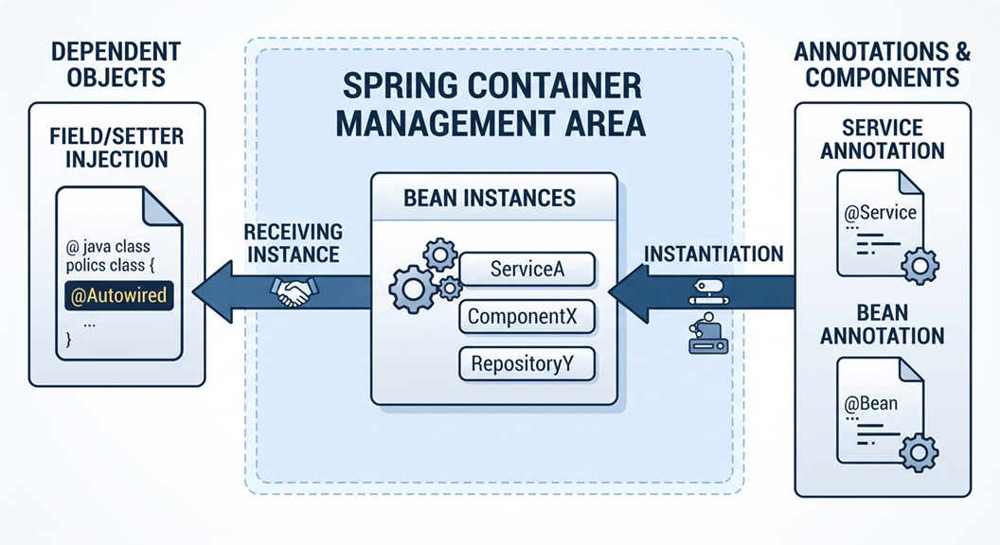

１，MVCモデルとSpring MVCの違い
誤解している方々が多いですね。
MVCのModelと、Spring MVCのModelは、全く別物です。
この誤解は、MVCと、Spring MVCを同列に見ている事から生じる誤解です。
MVCは目標で、Spring MVCは手段です。
MVCのModelと、Spring MVCのModelは、全く別物です。
この誤解は、MVCと、Spring MVCを同列に見ている事から生じる誤解です。
MVCは目標で、Spring MVCは手段です。
２，Spring MVCのServiceの役割
簡単に言えば、何でもかんでもControllerに書くのではなく、Controllerは「ユーザーからのリクエストを受け取り、Serviceに処理を依頼し、結果を返す」という役割に徹するべきです。
この、異様に膨らんだControllerを「Fat Controller（太ったコントローラー）」と呼びます。
細かい事を言えば、下記のような役割を担います。が、気にする事はありません。
このシステム固有の処理を書けば良いのですよ。
この、異様に膨らんだControllerを「Fat Controller（太ったコントローラー）」と呼びます。
細かい事を言えば、下記のような役割を担います。が、気にする事はありません。
このシステム固有の処理を書けば良いのですよ。
- ビジネスロジックのカプセル化 データの計算、業務ルールに基づくバリデーション、複数の処理を組み合わせた一連のワークフローなど、システム固有の「やりたいこと（業務）」をここに記述します。
- トランザクシ管理（@Transactional） データベースへの書き込みや更新が複数にまたがる際、「すべて成功したら確定（コミット）、途中でエラーが起きたらすべて取り消し（ロールバック）」というトランザクション制御を宣言的に行います。
- データアクの調停（Repositoryの統合） Controllerからリクエストを受け取ると、必要に応じて複数のRepository（データアクセス層）を呼び出し、データを加工してControllerへ返します。Controllerを「薄く（Thin Controller）」保つ役割があります。
- 他システムや外部APIとの連携 メール送信、外部APIの呼び出し、ファイル処理など、データベース操作以外のビジネスプロセスを統括します。
３，Sample03 シナリオ
１，ブラウザから http://localhost:8080/newmember へ GETリクエストを送信する。
２，Sample03Controller の @GetMapping("/newmember") アノテーションがついたメソッド sample0301() が起動する。
３，sample0301() は、空の MemberForm インスタンスを Model に追加し、newmember.html に遷移する。
４，newmember.html は、Thymeleaf を用いて作成され、Model のフォームデータを画面にバインドする。
５，ユーザーはブラウザから必要事項を入力し、サーバーに送信する。
６，Sample03Controller の @PostMapping("/newmemberResult") アノテーションがついたメソッド sample0301Result() が起動する。
sample0301Result() は、クライアントから送られてきた値（フォームデータ）を受け取る。
Service の sample0301Service に 生年月日 を引数として渡す。
７，sample0301Service は、受け取った 生年月日 から 年齢 を計算し、sample0301Result() に返す。
８，sample0301Result() は、Model に 年齢をセットし、newMemberResult.html に遷移する。
９，newMemberResult.html は、Model に渡されたデータを Thymeleaf で展開し表示する。
１０，処理を終了する。
２，Sample03Controller の @GetMapping("/newmember") アノテーションがついたメソッド sample0301() が起動する。
３，sample0301() は、空の MemberForm インスタンスを Model に追加し、newmember.html に遷移する。
４，newmember.html は、Thymeleaf を用いて作成され、Model のフォームデータを画面にバインドする。
５，ユーザーはブラウザから必要事項を入力し、サーバーに送信する。
６，Sample03Controller の @PostMapping("/newmemberResult") アノテーションがついたメソッド sample0301Result() が起動する。
sample0301Result() は、クライアントから送られてきた値（フォームデータ）を受け取る。
Service の sample0301Service に 生年月日 を引数として渡す。
７，sample0301Service は、受け取った 生年月日 から 年齢 を計算し、sample0301Result() に返す。
８，sample0301Result() は、Model に 年齢をセットし、newMemberResult.html に遷移する。
９，newMemberResult.html は、Model に渡されたデータを Thymeleaf で展開し表示する。
１０，処理を終了する。
４，Sample03 シーケンス図

５，Sample03Controller のコード
package com.example.demo.controller;
import com.example.demo.form.MemberForm;
import com.example.demo.service.Sample03Service;
import org.springframework.beans.factory.annotation.Autowired;
import org.springframework.stereotype.Controller;
import org.springframework.ui.Model;
import org.springframework.web.bind.annotation.GetMapping;
import org.springframework.web.bind.annotation.ModelAttribute;
import org.springframework.web.bind.annotation.PostMapping;
@Controller
public class Sample03Controller {
@Autowired
private Sample03Service sample03Service;
// 1, 2, 3: GETリクエストを受け取り、空のMemberFormをModelに追加してnewmember.htmlへ遷移
@GetMapping("/newmember")
public String sample0301(Model model) {
model.addAttribute("memberForm", new MemberForm());
return "newmember";
}
// 5, 6, 7, 8: POSTリクエストでデータを受け取り、Serviceで年齢計算を行い、Modelにセットして結果画面へ遷移
@PostMapping("/newmemberResult")
public String sample0301Result(@ModelAttribute MemberForm memberForm, Model model) {
// Serviceの呼び出し (生年月日を渡し、年齢を受け取る)
String age = sample03Service.sample0301Service(memberForm.getBirthDate());
// 年齢をフォーム（またはModel）にセット
memberForm.setAge(age);
// Modelにオブジェクトを追加
model.addAttribute("memberForm", memberForm);
return "newMemberResult";
}
}
プログラムの解説
@Autowired
private Sample03Service sample03Service;
private Sample03Service sample03Service;
@Autowired アノテーションは、Springの依存性注入（DI）を利用して、Sample03Service クラスのインスタンスを自動的に注入するために使用されます。
これにより、Sample03Controller 内で sample03Service を直接使用できるようになります。
private Sample03Service sample03Service; に new がない理由は、「自分で new（インスタンス化）しなくても、Spring Bootが代わりに作って自動で当てはめてくれるから」です。
通常、Javaプログラミングではオブジェクトを使うときに new キーワードを使いますよね。しかし、Spring Bootの「DI（依存性注入）」という仕組みを使っている場所では、この new を書く必要がなくなります。
これにより、Sample03Controller 内で sample03Service を直接使用できるようになります。
private Sample03Service sample03Service; に new がない理由は、「自分で new（インスタンス化）しなくても、Spring Bootが代わりに作って自動で当てはめてくれるから」です。
通常、Javaプログラミングではオブジェクトを使うときに new キーワードを使いますよね。しかし、Spring Bootの「DI（依存性注入）」という仕組みを使っている場所では、この new を書く必要がなくなります。

-
画面の中央におおきな長方形があります。
このエリアはメモリの中にある「Springが管理している領域」を表しています。 -
長方形のSpring管理領域の右側に、「@Service、@Bean」のプログラムがあります。
それらをインスタンス化して結果を「Springが管理している領域」に登録します。 - 「Springが管理している領域」の左側の「@Autowired」は、「Springが管理している領域」とつなぎます。
６，Sample03Service のコード
package com.example.demo.service;
import org.springframework.stereotype.Service;
import java.time.LocalDate;
import java.time.Period;
import java.time.format.DateTimeFormatter;
@Service
public class Sample03Service {
/**
* 生年月日から年齢を計算する
* @param birthDateStr 生年月日 ("yyyy-MM-dd" 形式を想定)
* @return 年齢
*/
public int sample0301Service(String birthDateStr) {
if (birthDateStr == null || birthDateStr.isEmpty()) {
return 0;
}
LocalDate birthDate = LocalDate.parse(birthDateStr, DateTimeFormatter.ofPattern("yyyy-MM-dd"));
LocalDate currentDate = LocalDate.now();
return Period.between(birthDate, currentDate).getYears();
}
}
７，フォームクラス (MemberForm.java) のコード
package com.example.demo.form;
import lombok.Data;
@Data
public class MemberForm {
private String kanjiSei; // 漢字姓
private String kanjiMei; // 漢字名
private String kanaSei; // カナ姓
private String kanaMei; // カナ名
private String birthDate; // 生年月日 (例: "1990-01-01")
private String age; // 年齢 新しく追加されたフィールド
private String postalCode; // 郵便番号
private String address; // 住所
}
Lombokは便利です。setterやgetterを自動生成してくれるので、コードがすっきりします。